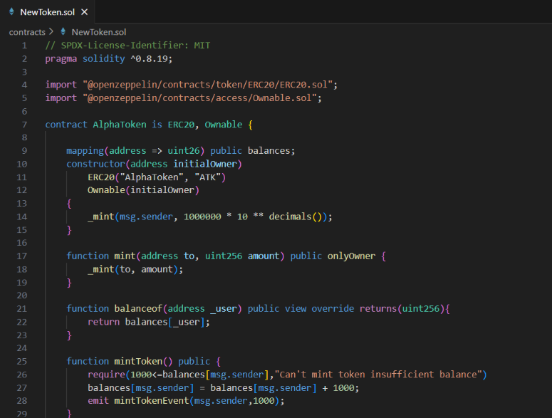
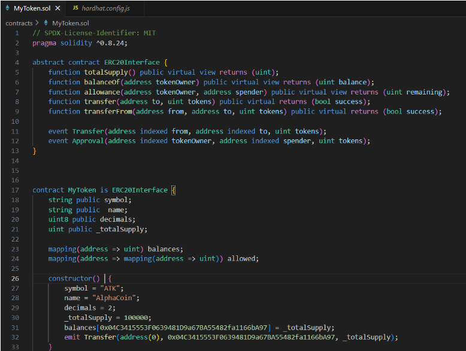
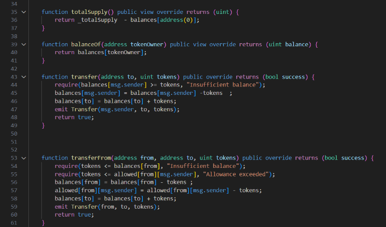
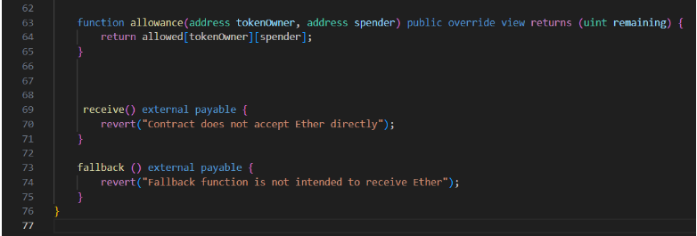

ERC20 ,short for "Ethereum Request for Comment 20," is a standard interface for fungible tokens on the Ethereum blockchain. It defines a set of functions that tokens must implement, allowing them to be compatible with the broader Ethereum ecosystem. These functions include transferring tokens, querying balances, and approving token spending.
Fungibility: ERC20 tokens are fungible, meaning each token is interchangeable with another token of the same type. This characteristic facilitates seamless token exchange and interoperability within the Ethereum ecosystem.
Basic Functions: ERC20 tokens include fundamental functions such as:
balanceOf(address): Allows querying the balance of tokens held by a specific address.
transfer(address, uint256): Enables transferring tokens from the sender's address to another address.
approve(address, uint256): Permits another address to withdraw tokens from the sender's address.
Optional Functions: In addition to the basic functions, ERC20 tokens may include optional functions such as:
allowance(address, address): Allows checking the amount of tokens a spender is permitted to withdraw from a specific address.
transferFrom(address, address, uint256): Facilitates transferring tokens on behalf of another address.
Events: ERC20 tokens emit events to notify external entities about token transfers and approvals. These events enhance transparency and enable efficient tracking of token movements.
Token Metadata: ERC20 tokens can include metadata such as the token name, symbol, and decimal places. This metadata enhances user-friendliness and ensures compatibility with wallets and exchanges.
Interoperability: ERC20 standardization promotes interoperability, enabling seamless integration of tokens across various Ethereum-based applications, wallets, and exchanges.
Widespread Adoption: The ERC20 standard has gained widespread adoption, making it the de facto standard for token creation on the Ethereum blockchain.
Tokenization: ERC20 tokens facilitate the tokenization of various assets, allowing for the representation of real-world assets, digital collectibles, and utility tokens on the Ethereum blockchain.
Ensure you have Node.js and npm installed on your machine
1. Install hardhat by typing the below command onto the command prompt or Vscode terminal
npm install -g hardhat
2. Create a project directory.Navigate to the project directory with ‘cd’ command and run ‘npx hardhat’
mkdir my-project
cd my-project
npx hardhat
3.Select default options and create a javascript project
4.The project directory will now contain the following folders
The contracts folder will house the Solidity token contract, and you can store additional contracts here.
Use the test folder to draft unit tests for our token, which will help identify and prevent potential future issues.
The ignition folder has modules for deployment purposes.
The hard hat.config.js file will help us configure HardHat.
In the Contract directory, locate a file named “Lock.sol.” Since it’s redundant, delete it. Then, generate a new Solidity file titled “MyToken.sol”.Following is the code for deploying a ERC20 token.

import "@openzeppelin/contracts/token/ERC20/ERC20.sol";
import "@openzeppelin/contracts/access/Ownable.sol";
These lines import two Solidity contracts from the OpenZeppelin library.
ERC20.sol: This contract provides the implementation of the ERC20 standard for fungible tokens on the Ethereum blockchain.
Ownable.sol: This contract provides basic authorization control functions, simplifying the implementation of user permissions.
Next section defines the constructor function of the "AlphaToken" contract.
-mapping(address => uint26) public balances; declares a public mapping
called "balances" that associates Ethereum addresses with unsigned 26-bit integer
-constructor(address initialOwner): This is the constructor function, which is executed only once during contract deployment. It takes an "initialOwner" address as an argument.
-ERC20("AlphaToken", "ATK"): This calls the constructor of the "ERC20" contract with two arguments: the name of the token ("AlphaToken") and its symbol ("ATK").
-Ownable(initialOwner): This calls the constructor of the Ownable contract with "initialOwner" as the owner of the contract.
-_mint(msg.sender, 1000000 * 10 ** decimals()): This mints 1,000,000 tokens and assigns them to the contract deployer "(msg.sender)". The number is multiplied by 10 raised to the power of "decimals()", which is a function inherited from the ERC20 contract that returns the number of decimals for the token (typically 18).
The function mint allows the owner of the contract to mint new tokens and assign them to a specified address.
-public: This function can be called externally.
-onlyOwner: This is a modifier from the "Ownable" contract that restricts the function to be callable only by the owner of the contract.
-_mint(to, amount): This function is inherited from the "ERC20" contract and is used to mint new tokens and assign them to the specified address "(to)" with the specified amount "(amount)".
The function "balanceof" and takes an Ethereum address "_user" as input.
-It's a public view function, meaning it can be called from outside the contract and doesn't modify the state.
-It overrides a function from an inherited contract/interface.
-It returns the balance of the "_user" by accessing the balances mapping with "_user" as the key.
The function named "mintToken"
-It checks if the caller "(msg.sender)" has at least 1000 tokens in their balance before minting.
-If the condition is met, it adds 1000 tokens to the caller's balance.
-It emits a "mintTokenEvent" event indicating that tokens have been minted.
The function named "transfer" takes an address "_receiver" and a uint256 "amount" as parameters.
-It's a public view function, which overrides a view function from an interface
-It checks if the amount is not zero and if the sender (msg.sender) has enough tokens to transfer.
-If conditions are met, it transfers the amount of tokens from the sender to the _receiver.
-It emits a Transfer event indicating the transfer of tokens.
The function named "approve" takes an address "_delegate" and a uint256 "_amount" as parameters.
-It overrides a function from an inherited contract/interface.
-It allows "_delegate" to spend "_amount" of tokens on behalf of the caller (msg.sender).
The function named allowance takes two addresses "_owner" and "_delegate" as parameters.
-It's a public view function, overriding a function from an inherited contract/interface.
-It returns the amount of tokens that "_delegate" is allowed to spend on behalf of "_owner".



Contract ERC20Interface, outlines the standard functions and events expected in an ERC20 token contract.
It declares functions like totalSupply(), balanceOf(), allowance(), transfer(), and transferFrom(), specifying their inputs, outputs, and access modifiers.
It also includes events such as Transfer and Approval, which are emitted to notify external clients about token transfers and approvals
Contract MyToken, is the main token contract which inherits from ERC20Interface to implement the ERC20 standard functions and events
symbol, name, decimals, and _totalSupply are public variables representing the symbol, name, decimal places, and total supply of the token, respectively
mapping(address => uint) balances,This mapping relates Ethereum addresses to the token balances held by those addresses.
mapping(address => mapping(address => uint)) allowed;This mapping tracks the spending allowances granted by token holders to other addresses
constructor()This is the constructor function, which is a special function that gets executed only once when the contract is deployed.
Each variable has been assigned a value
There is assignment of the entire total supply of tokens to the specified wallet address, making it the initial holder of all tokens
The line emit Transfer is an event to indicate the initial distribution of tokens.
It signals given metamask address has received _totalSupply tokens from the zero address (address(0)), effectively minting all tokens and assigning them to the specified address
The function totalSupply() returns the total supply of tokens in circulation.
It subtracts the balance of the zero address (address(0)) from the _totalSupply to exclude any tokens assigned to the zero address.
The result is the total supply of tokens that are held by token holders.
The balanceOf(address tokenOwner) function returns the balance of tokens owned by the specified tokenOwner.
It simply retrieves the balance of the tokenOwner from the balances mapping and returns it.
The transfer(address to, uint tokens) function allows the sender to transfer tokens to another address (to).
It first subtracts tokens from the sender's balance Then, it adds tokens to the recipient's balance.
After the transfer, it emits a Transfer event to notify listeners about the token transfer.
The transferFrom(address from, address to, uint tokens) function allows an approved spender to transfer tokens from one address (from) to another (to).
It first subtracts tokens from the sender's balance
Then, it subtracts tokens from the spender's allowance.
After the transfer, it adds tokens to the recipient's balance
Finally, it emits a Transfer event to notify listeners about the token transfer.
The allowance(address tokenOwner, address spender) function returns the remaining number of tokens that the spender is allowed to spend on behalf of the tokenOwner.
It retrieves the allowance from the allowed mapping and returns it.
receive(): This is a special function introduced in Solidity version 0.6.0 that is called when the contract receives Ether without any data. It is marked as external to specify that it can be called from outside the contract. Only one receive() function is allowed per contract. It is used to handle plain Ether transactions
fallback(): This is another special function in Solidity used to handle calls to undefined or invalid functions in the contract
Now we are done writing the contract,now run ‘npx hardhat compile’ and check if it gets successfully gets compiled